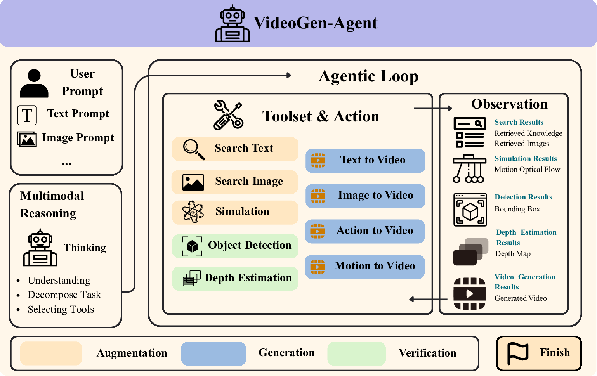
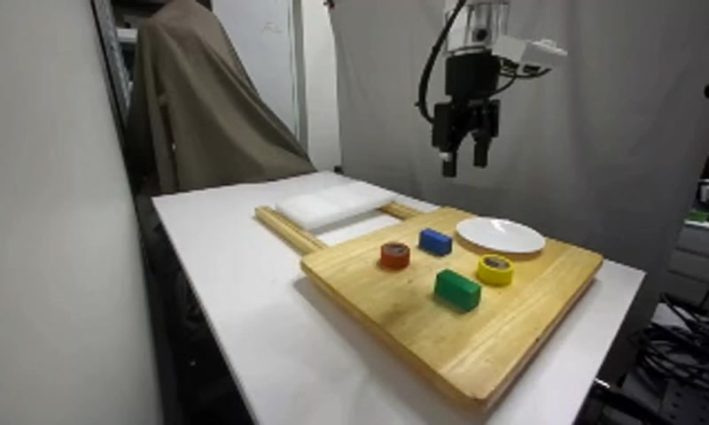
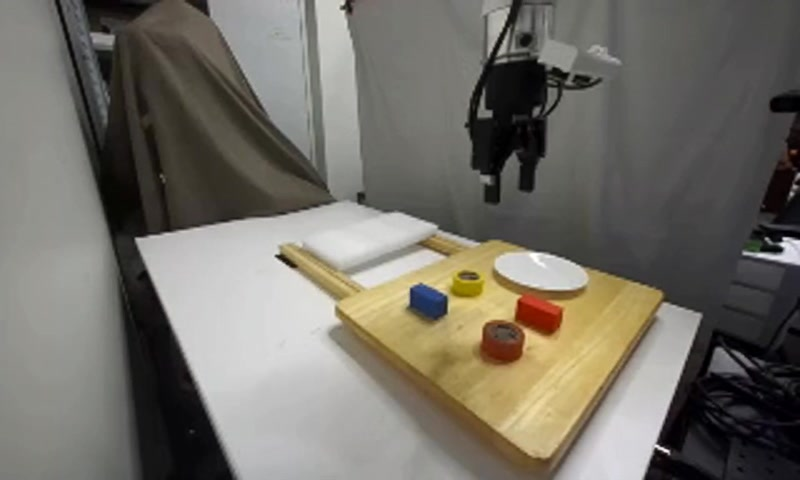
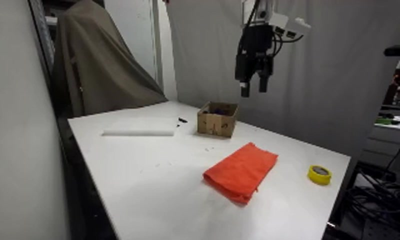
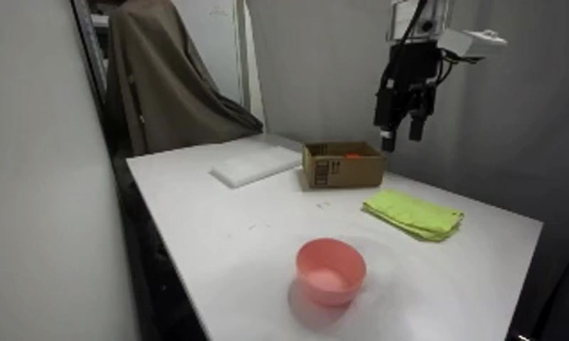

Abstract
Recent text-to-video diffusion models have shown strong capabilities in generating high-fidelity and temporally coherent videos. However, they remain fundamentally constrained by frozen internal knowledge, weak physical reasoning, and absent temporal scheduling, thus often failing on real-world prompts that name specific entities, require physically plausible dynamics, or prescribe ordered phases.
In this paper, we present VideoAgent, as the first attempt to train an agentic reinforcement-learning framework for video generation that performs multi-step reasoning and tool use to ground every aspect of the synthesis. We construct an agentic text-to-video dataset spanning six failure-mode-targeted task categories, and introduce VABench, a held-out benchmark of 600 prompts that probes search-grounded knowledge, identity preservation, physical plausibility, and multi-phase temporal reasoning. We train VideoAgent with SFT followed by agentic GRPO with a category-aware hybrid reward that combines format, video-judge, and tool-quality signals. On VABench, VideoAgent improves the video generation baseline by around 19 points (Seedance 1 Pro Fast backbone: 56.5 → 75.6; upgrading to Seedance 2 Pro Fast at inference lifts the aggregate score further to 84.7 without policy retraining). Improvements are largest on subject-identity-critical and temporally-phased prompts.
Method
VideoAgent formulates video generation as a multi-turn tool-use problem. Given a prompt, the agent sequentially decides whether to seek additional context, generate a video candidate, or verify and refine an intermediate result. Tools are organised into three functional groups:
1 · Augmentation
Text web search, image search, and code-based physical simulation ground generation in external knowledge and controllable priors.
2 · Generation
A family of video generators with different conditionings: T2V, I2V, motion-controlled (ControlNet), and (multi-) reference-image-to-video.
3 · Verification
Grounding DINO and Depth Anything inspect generated videos for subject localisation, spatial relations, and geometric consistency.

Training
Starting from Qwen3-VL-8B-Instruct, we first distil teacher trajectories via supervised fine-tuning, then optimise the agent with GRPO using a category-aware hybrid reward that combines format correctness, model-as-judge video score, and tool-quality signals. This gives stable, informative gradients for multi-turn rollouts.
VABench — six failure-mode-targeted categories
Knowledge Process (KP)
Named techniques / processes whose execution depends on specific motion details.
Visual Knowledge — Single (VK-S)
One named real-world subject; identity must be preserved across the clip.
Visual Knowledge — Multiple (VK-M)
Multiple named subjects; identity preservation under interaction.
Simulation (Sim)
Physically governed motion under specified initial conditions: collisions, free fall, orbits.
Multi-Subject (MS)
Multi-entity composition, inter-object interaction, spatial reasoning.
TimeGrounded (TG)
Explicit time-ordered sequences with complete and correctly ordered phases.
Per-category results on VABench
Scores are the Gemini 2.5 Flash judge mean in [0, 100]. Higher is better.
| Model | KP | VK-S | VK-M | Sim | MS | TG | Overall |
|---|---|---|---|---|---|---|---|
| Open-source baselines | |||||||
| CogVideoX-5B | 38.9 | 48.3 | 37.8 | 41.6 | 50.4 | 30.8 | 41.3 |
| Mochi-1 | 41.9 | 49.6 | 37.8 | 48.4 | 55.4 | — | — |
| HunyuanVideo 13B | 37.5 | 29.3 | 17.6 | 31.6 | 31.5 | 31.1 | 29.8 |
| Wan 2.1-T2V-14B | 42.0 | 46.2 | 39.5 | 49.5 | 60.8 | 62.0 | 50.0 |
| Commercial baselines | |||||||
| Kling 3.0 | 67.5 | 72.5 | 60.5 | 71.5 | 90.5 | 58.1 | 70.1 |
| Hailuo (MiniMax) | 63.0 | 58.6 | 52.4 | 55.1 | 86.0 | — | 63.0 |
| Seedance 1 Pro Fast | 55.5 | 51.4 | 44.2 | 46.2 | 74.6 | 66.8 | 56.5 |
| Seedance 2.0 Pro Fast | 78.0 | 75.0 | 69.0 | 64.5 | 87.8 | 68.9 | 73.9 |
| Ours | |||||||
| VideoAgent — RL (Toolset 1, SD 1 backend) | 80.4 | 75.1 | 65.3 | 67.9 | 83.1 | 81.7 | 75.6 |
| VideoAgent — RL (Toolset 2, SD 2 backend) | 92.1 | 83.2 | 86.7 | 69.2 | 90.7 | 84.6 | 84.7 |
Toolset 1 keeps the same generation backbone (Seedance 1 Pro Fast) that VideoAgent was trained on. Toolset 2 swaps in stronger Seedance 2 generators at inference time without retraining the agent, demonstrating backend-agnostic tool use.
Sample videos across categories
Six prompts, one per task category. Left: Seedance 1 Pro Fast (single-pass T2V baseline). Right: VideoAgent (ours) — the final clip from the agent demo.
An elderly Tai Chi practitioner in a white tunic performs 'White Crane Spreads Its Wings' in a quiet courtyard.
Vigil (from the game Arknights) draws his crossbow in a fluid motion, cloak billowing as he fires a bolt trailing dark energy, his single visible eye narrowing while architecture crumbles behind him.
On a sunny Paris rooftop Mati Diop lines up a handheld shot, Ladj Ly crouches beside her reviewing the monitor, and Audrey Diwan leans in to cue an actor, all three directors pointing at the frame together.
Glass cracking, a cricket ball breaks a pavilion window and the scorer inside shields his ledger.
In a 12-second video, 0-4s: a heavy rain gutter clogged with leaves and overflowing. 4-8s: the weight cracks the bracket. 8-12s: the gutter section swings down and dumps water and leaves on the walkway.
A 0.3 kg rubber ball at 8 m/s hits the edge of a 3 kg metal cube and the cube starts rotating. Please maintain physics realism.
Beyond text‑to‑video — embodied manipulation
The same agentic pattern transfers to robot manipulation. Given a natural-language instruction, the agent (1) calls pi0.5 to predict a 60-step joint trajectory, then (2) hands that trajectory to ctrl-world, an action-conditioned world model that renders the resulting rollout. Unlike pure I2V baselines that see only the first frame, the agentic stack consumes the policy's planned actions — so the synthesized video is grounded in a real motor plan, not imagined.
Four manipulation prompts. Columns left → right: the natural-language prompt, the I2V input frame (shared starting image), Ground truth (robot recording), VideoAgent (ours, pi0.5 → ctrl-world), and Wan 2.2 I2V 14B (baseline).
| Prompt | I2V input | Ground truth | VideoAgent (ours) | Wan 2.2 I2V 14B |
|---|---|---|---|---|
| Pick & Placepick up the blue block and place in white plate |  |
|||
| Pick & Placepick up the red block and place in white plate |  |
|||
| Towel Foldfold the towel |  |
|||
| Wipe Tablemoving the towel from right to left |  |
Ground-truth recordings are 320×192 at 4 fps (raw robot camera); the agentic pipeline inherits that resolution since ctrl-world generates in the same space as its training data. The Wan 2.2 baseline runs at 800×480, 16 fps. All cells displayed at uniform width — black bars are letterboxing, not crop.